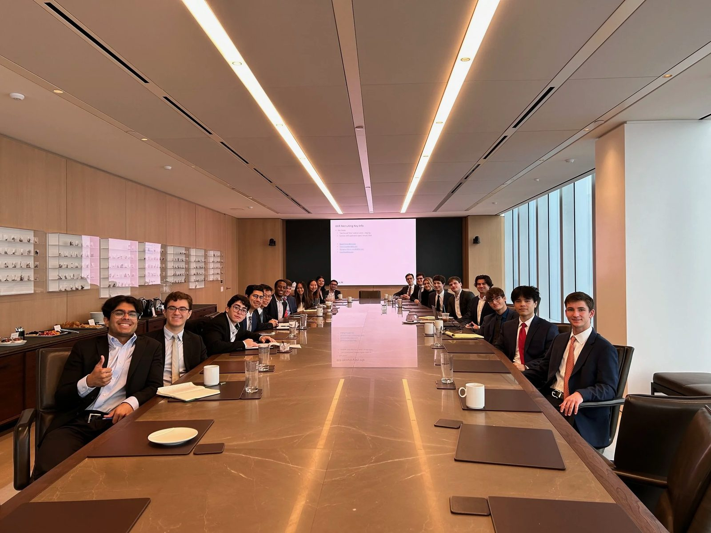
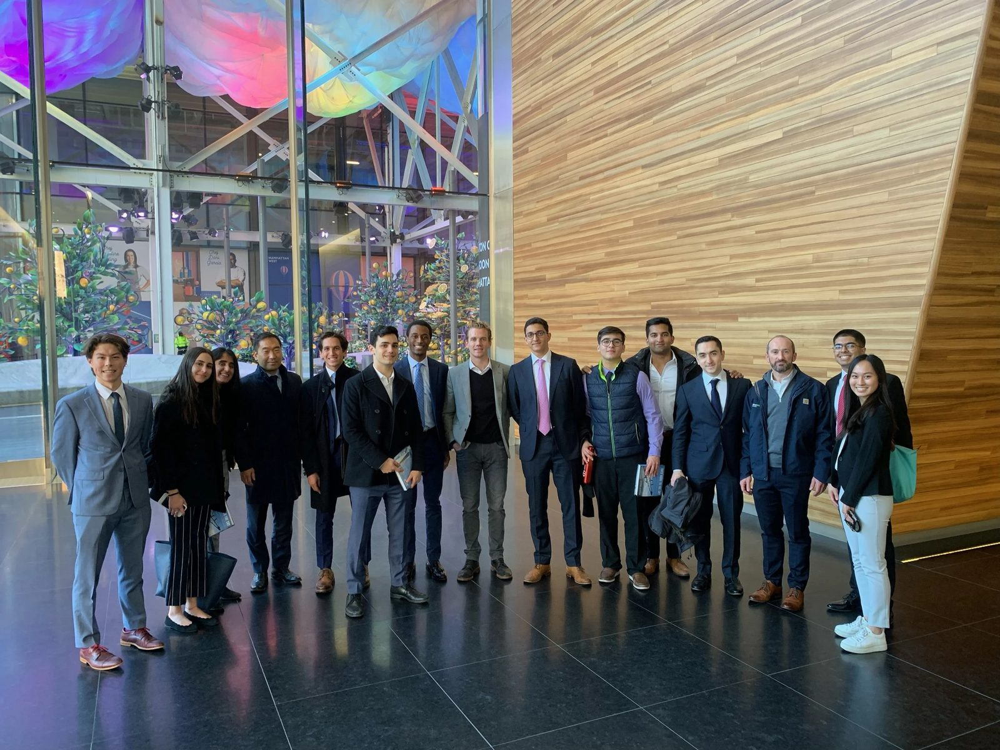
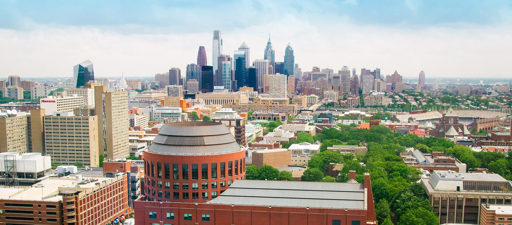
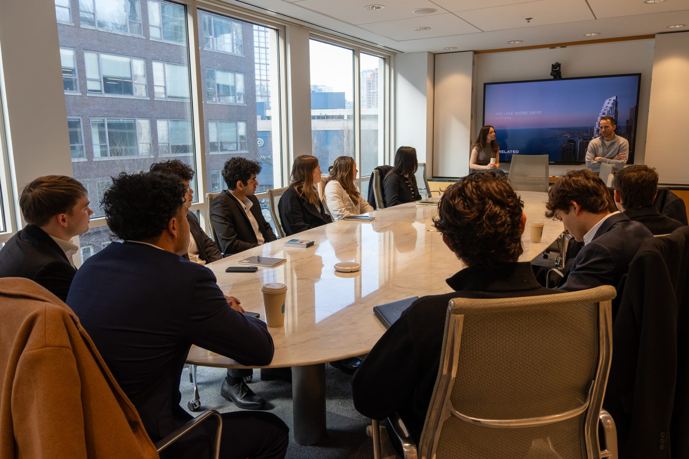
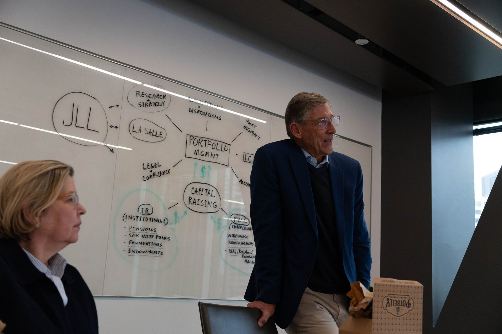

Treks
The Treks Committee organizes small group trips to top real estate firms and property sites throughout the year. Some recent Treks highlights have included NYC, Los Angeles, Houston, Boston, Chicago, Dubai, and London.
Explore treksTreks to leading firms, conversations with industry leaders and case competitions against the country’s best programs.
Our mission
The Wharton Undergraduate Real Estate Club seeks to provide an intellectual environment that not only allows students to learn, but also to network and build meaningful foundations for success in real estate.
WUREC provides increased access to many Zell/Lurie Real Estate Center offerings, including the Ballard Executive Visitor Luncheon Series, the Career Mentor Program, and the Spring and Fall Members’ Meetings. Active members also have access to MBA/Undergraduate Real Estate Club Mixers, site visits, MBA Lecture Series events, and the Resume Book.
All members must attend at least three events per semester to retain membership.
Sign upCommittees
The Treks Committee organizes small group trips to top real estate firms and property sites throughout the year. Some recent Treks highlights have included NYC, Los Angeles, Houston, Boston, Chicago, Dubai, and London.
Explore treks
The Speakers Committee is responsible for organizing events with preeminent real estate executives where they offer insight into their company and submarket. Previous speaker events include Charles Kushner (Founder of Kushner Companies), John Carrafiell (Co-CEO of BGO), and Jim Garman (Global Head of Real Estate at Goldman Sachs), among others.
Explore speakers
The Careers Committee is responsible for liaising with firms interested in recruiting Wharton students and increasing their presence on campus. Duties include facilitating job opportunity communications, organizing info sessions, and maintaining relations with real estate companies.
Learn more
The Communications Committee is responsible for all marketing and listserv communication, as well as all club media including social media and the WUREC website.
Learn more
The Internal Committee organizes all club social events and the WUREC recruiting process. Internal manages all membership-related activities, including the GBM program, and serves as a liaison to the Zell/Lurie Center.
Learn more
The Institute Committee focuses on teaching a holistic curriculum to all WUREC members that covers a broad range of real estate basics, including RE Excel financial modeling and qualitative asset valuation. The Institute is open to all underclassmen.
Learn moreThe Investments Committee builds on the Institute curriculum with a highly technical, recruiting-focused experience. Members dive into quantitative asset valuation, REITs, capital structures, and case-based financial modeling. The committee leads deal presentations, investment memos, and mock technical interviews to prepare members for roles in real estate finance fields. Students who completed the Institute program in the previous year are preferred.
Learn more
The Infrastructure Committee focuses on infrastructure investing across transportation, energy, digital, and social assets. The committee hosts leading infrastructure firms and speakers, and runs case studies covering deal sourcing, underwriting, and capital markets trends in the sector.
Learn moreRecent
Photographs from treks and events





An intellectual environment that not only allows students to learn, but also to network and build meaningful foundations for success in real estate.From the WUREC mission Become a member
Executive Board
 Josh Kwon
Co-President · Wharton ’28
Josh Kwon
Co-President · Wharton ’28
 Griffin Albaugh
Co-President · Wharton ’27
Griffin Albaugh
Co-President · Wharton ’27
 Evie Rosenfeld
Treks · Wharton ’29
Evie Rosenfeld
Treks · Wharton ’29
 Frank de la Terga
Treks · Wharton ’28
Frank de la Terga
Treks · Wharton ’28